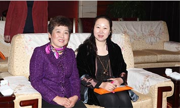
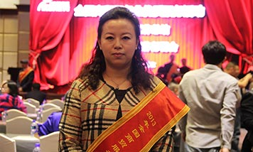
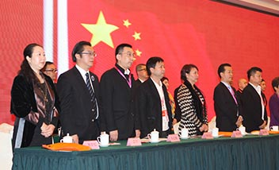

华辰美容，始于1988年，前身为红颜坊科技发展有限公司。
2004年12月，与美国Madison E-W自然健康医学院联合创立“润芳可”品牌。
2005年10月，中美合资华辰美容化妆品公司（哈尔滨）正式成立。
2006年03月，华辰陆续提出《润芳可肤质划分》、《补水四因子》、《不安定肌肤理论》、
《肌肤的生物恒定》等理念，以专业理论指导解决肌肤养护的各种问题，创领行业技术先锋。
2007年09月，在广州收购GMP国际标准厂房，并通过ISO:9001质量体系认证。
2009年01月，在北京奥林匹克公园的玲珑塔举办润芳可品牌发布会。
2010年05月，成立永丰美容学校，培训美容专业人员。
2011年04月，永丰美校参与“给渔行动”，捐资30万元助学，关注社会再就业人群。
2011年06月，与韩国CIB生物实验室成立抗衰项目研究中心。
2011年06月，华辰山东分公司在济南正式成立。
2011年07月，华辰公司（中国）管理总部正式落户北京。
2012年05月，华辰公司在北京万通大厦购入自用办公区域。
2012年09月，华辰天津分公司正式成立。
2012年，华辰公司被中国消费者协会评选为“放心美容院培训机构”
2013年09月，华辰公司河南办事处在郑州正式成立。
2013年12月，华辰公司在济南明泉中心购入办公区。
2013年，董事长高文红女士受商务部邀请参与起草《美容服务面部护理操作技术要求》
和《美发美容行业岗位和岗位规范要求》标准，并被聘请为《标准》起草专家。
2013年，华辰公司多名成员被商务部评选为“全国优质服务明星”，并在全国巡讲。
2013年，中国美发美容协会授予华辰公司“中国美发美容行业优秀品牌企业”和
“中国美发美容行业优质服务品牌”。
2014年05月， 华辰公司在哈尔滨银泰高端商圈购入千平米办公楼。
2014年06月，华辰公司在南京建立江苏分公司。
2015年01月，华辰公司参与教育部全国美发美容职业教育教学指导委员会举办的年会活动，
并与实美职业学校签约成为校企合作战略伙伴。
2015年11月，华辰公司与北京财贸职业学院成为校企合作战略伙伴，
为更多的美业人员提供求学机会。
2004年,华辰公司与美国E-W自然健康医学院联合创立润芳可品牌，润芳可自创立以来，始终保持了独特的核心竞争力，坚持传播正确的护肤理念和科学的护肤方法，引导美容专业人士和客户缔造长期健康的美丽肌肤，正本清源，让肌肤护理回归健康自然的本质。产品结合了专业性极强的皮肤护理技术，配以现代科技和自然植物的养护功效，成为了难以超越的护肤品牌。
润芳可的研发者在长期的护肤实践中积累了丰富的临床经验和大量的皮肤调理案例，在《美容皮肤学》和《美容临床学》的领域，首家创新性提出了若干最新实用的美容皮肤学理论，如“肤质划分理论”“保水四因子”“不安定肌肤理论”等，这些理论对于调理皮肤恢复机能具有极大的帮助。
润芳可品牌的诞生，不仅为广大爱美女士带来了安全有效的护肤品，同时对美容行业起到了划时代、革命性的改变——润芳可提供的不仅仅是优质的产品，更是给消费者乃至整个行业带来一个全新的护肤理念。
润芳可是基于医学理论及润芳可美容学临床基础而研发，结合国际最新的科技创新，勇于探索，和众多国际一流研发机构紧密合作。并与美国E-W自然健康医学院、韩国CIB生物实验室在细胞与介质渗透技术和微脂囊技术等方面进行深度合作，将国际尖端的现代医学科技引入美容护肤领域，突破性地解决皮肤敏感、松弛、衰老等多种肌肤问题。
润芳可产品以修护、防护为主，强调油水平衡，增加皮肤含水量及脂质成分，调理皮肤更新状况，修复重建皮肤屏障为主，产品最大的特点就是不添加人工色素、人造香料、矿物油、石油系表面活性剂等对肌肤有刺激的成分，安全可靠。
润芳可系列产品在生产过程中公司坚持采用高纯净、无添加的进口原料，坚持高标准、国际化的GMP标准生产流程，坚持以高品质的产品、高境界的服务来提升品牌力，缔造世界一流的护肤精品。
润芳可的技术，不是手法，也不是仪器，是像医生一样来分析、辨别和调理皮肤，提供专业护理和家居护理解决方案，并教会顾客认识自己的肌肤和正确保养皮肤的一系列过程。
润芳可皮肤专家基于医学背景以及对美容产品对研发经验，从多年对临床实践及研究中发现了“不安定肌肤”的存在，这一开创性的发现，解决了美容行业多年来对皮肤问题的来源及演化过程的疑问，使很多处于不安定状态的肌肤得到了良好的改善，成功避免了由不安定肌肤转化成问题性肌肤，对诸多临床皮肤症状赋予了全新认知。
润芳可的皮肤专家基于多年的美容临床经验，重新定义了皮肤分型方法，专业美容临床人员如果掌握了润芳可的皮肤分型，就会非常容易的根据皮肤分型搭配适合该类型皮肤的专业产品，这是对美容师专业技术的一项重大提升，让美容人员更加容易掌握皮肤的特性，也是护肤史上一次重大革命。
在“不安定肌肤”及“润芳可皮肤分型”理论的指导下，润芳可皮肤实验室综合运用美国E-W自然健康医学院的微脂囊和细胞介质与渗透技术，开发出全球领先的无添加细胞分类护肤品——REVACL（润芳可）系列护肤品。REVACL采用天然植物成分和脂质作为基础原料，突破了传统护肤品制造工艺，从根本上避免了传统护肤品制造过程中经常使用矿物油、石油系表面活性剂、色素、香料、酒精等对肌肤有害成分，做到了对肌肤的安全护理，真正改善不安定肌肤的状况，修复肌肤各层细胞，实现细胞的分层护理，使不安定肌肤恢复至健康状态。
2013年，中美合资华辰美容化妆品公司董事长高文红女士，作为业界专家，受商务部邀请参与起草《美容服务面部护理操作技术要求》和《美发美容行业岗位和岗位规范要求》标准。两大标准的制定，规范了美容操作的流程；提升了服务质量；提高了行业服务的透明度；保护了消费者的权益；引导阳光服务和明白消费；推进了美容服务业的发展和进步。高文红女士为中国美容行业的发展做出了突出贡献。
全国商贸服务业优质服务活动是在全国范围开展的一项旨在提高服务质量，促进商贸服务业发展的一项重要活动。2013年，在商务部的指导和支持下，中国商业联合会联合八个有关行业协会、分支机构和37个地方商务主管部门，围绕“树先进”的活动主题，在全国范围内开展了大量活动，掀起了争先创优的热潮。中美合资华辰美容化妆品有限公司润芳可品牌省区域经理蒋琰女士，被评为“2013年全国商贸服务业优质服务活动美发美容行业优质服务明星”，并作为先进典型人物受邀在全国范围内巡讲。
全国美发美容职业教育教学指导委员会，是受育部委托，由中国美发美容协会牵头组建和管理的专家型组织，是对美发美容专业职业教育教学工作进行研究、指导、服务和质量监控的专家咨询组织，同时也是指导美发美容行业职业教育与培训工作的专家组织。华辰美容化妆品公司董事长高文红女士作为行指委委员，带领企业多次参与委员会组织的活动，为美容美发行业的教育事业做出了重要贡献。
润芳可品牌的诞生不仅为广大爱美女士带来了安全有效的护肤品，同时由于护肤理念的与众不同，对美容行业起到划时代的作用，更是从经营角度给行业带来了历史性的突破。
用同样的产品，涂抹出不一样的效果。就像医院的专家、医师是医院的核心竞争力一样，好的美容院需要一流的美容师！我们的优势就是搭建一流技术美容师团队，以技术打动顾客，带来客源！
REVACL采用天然植物成分和脂质作为基础原料，突破了传统护肤品制造工艺，从根本上避免了传统护肤品制造过程中经常使用矿物油、石油系表面活性剂、色素、香料、酒精等对肌肤有害的成分，做到了对肌肤的安全护理，真正改善不安定肌肤的状况，修复肌肤各层细胞，实现细胞的分层护理，使不安定肌肤恢复至健康状态。
不以美容师的销量为硬性要求，而是以解决顾客肌肤问题为衡量标准，来评定美容师的业绩，顾客肌肤问题解决之后自然会追捧产品，而销售业绩也会提升，打造产品销售链的良性循环！
行业调查发现，低价促销是将几个月的利润集中在促销当月收回，促销结束后一段时间内，美容院的业绩惨淡不堪，而润芳可彻底扭转靠促销吸引客源的方式，不降价不促销，达到店面客源稳定，业绩稳定，持续经营的效果。